- Корпоративный торт на Новый год с гирляндой
- Изготовление фигурки Санта Клауса для корпоративного торта на Новый год с фото
- Надписи и логотипы для новогоднего торта на корпоратив
- Торт на новогодний корпоратив с конвертом
Обычно на вечеринку по случаю Нового года собираются вместе и руководство компании, и подчиненные. Превосходное украшение праздничного стола — корпоративный торт на Новый год с логотипом компании. Десерт должен создать торжественное настроение, но в то же время иметь презентабельный вид.
Корпоративный торт на Новый год с гирляндой
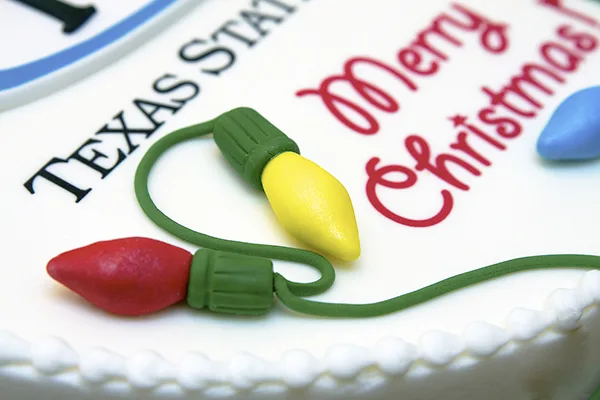
Оригинальным украшением стола станет десерт с гирляндой из мастики. Ее легко изготовить самостоятельно. Посмотрите на фото корпоративного торта на Новый год с таким декором – он выглядит достаточно торжественно и вместе с тем строго.
Вам понадобятся:
- небольшие кусочки мастики красного, оранжевого, желтого, светло- и темно-зеленого, синего цветов;
- пищевой клей или вода;
- зубочистки;
- скальпель или острый нож;
- круглая выемка сантиметрового диаметра (опционально);
- экструдер (опционально).
Процесс приготовления:
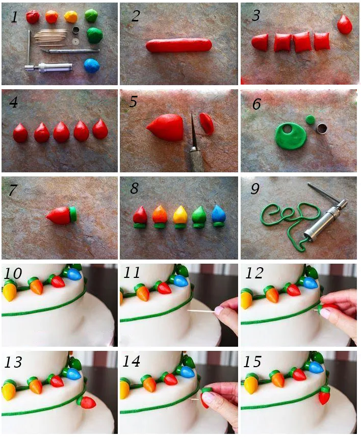
- Подготовьте необходимые ингредиенты и инструменты.
- Сформируйте одинаковые по толщине колбаски из мастики всех перечисленных цветов, кроме темно-зеленого.
- Нарежьте полученные колбаски на равные кусочки острым ножом или скальпелем.
- Сделайте из них шарики. Затем раскатывающим движением слегка удлините и заострите один из краев, чтобы получить каплеобразную форму. Для более праздничного вида можно покрыть их съедобными блестками.
- Обрежьте верхнюю, более широкую часть «капель», чтобы там была ровная поверхность.
- По количеству лампочек подготовьте патроны. Раскатайте небольшой кусочек темно-зеленой мастики. Выемкой вырежьте из пласта круги.
Совет!
Если у вас нет выемки, можно вручную сформировать небольшие шарики и слегка сплющить их.
7-8. Затем соедините две детали лампочки при помощи пищевого клея или воды. Оставьте их высыхать на 12-18 часов при комнатной температуре в месте с умеренной влажностью.
- Тем временем из темно-зеленой мастики сформируйте длинный шнур (провод), чтобы им можно было обмотать торт. Для этого либо воспользуйтесь экструдером, либо раскатайте колбаску из массы вручную, стараясь, чтобы по всей длине она была одинаковой толщины. Благодаря экструдеру, гирлянда будет выглядеть аккуратней, а ее изготовление займет меньше времени, но без него можно обойтись. Ждать, пока «провод» высохнет, не нужно. Можно изготовить его непосредственно перед тем, как декорировать новогодний торт на корпоратив.
10-15. После высыхания гирлянду крепят к кондитерскому изделию. Сначала с помощью пищевого клея или воды приклейте провод к покрытию из мастики. Смазав патрон лампочки клеем, приложите ее к темно-зеленому шнуру. Расстояние между фонариками должно быть примерно 1,5-2 см. В тех местах, где гирлянда лежит на поверхности торта, лампочки можно никак дополнительно не крепить, просто смазывать их клеем. Если же они будут находиться сбоку, насадите их на зубочистку.
Посмотрев на готовый торт на новогодний корпоратив с фото пошагового изготовления гирлянды, вы поймете, что порадовать близких вкусным и красивым десертом на праздник совсем не сложно.
Изготовление фигурки Санта Клауса для корпоративного торта на Новый год с фото
На корпоративном торте можно установить фигурку Санта Клауса из мастики в ярко-красном наряде и шапке с помпоном. Все детали вылепливаются отдельно из сахарной массы.
Вам понадобится мастика таких цветов:
- красного – для тела и шапки;
- бежевого – для лица и рук;
- белого – для бороды, усов, бровей, окантовки одежды, шнурка на мешке;
- черного – для глаз, пуговиц, сапог;
- коричневого – для мешка;
- зеленого и желтого (или любых других оттенков) – для подарка.
Также вам пригодятся инструменты:
- стеки для работы с мастикой (или пластилином) – можно заменить зубочисткой;
- острый нож;
- латексные перчатки;
- зубочистки;
- пищевой клей или вода.
Порядок выполнения следующий:

- Из красной мастики скатайте колбаску и закруглите ее края. Согните ее посередине, чтобы получились ноги Санта Клауса. Как это должно выглядеть, вы видите на фотографии. Там, где будут крепиться ботинки, сделайте небольшое углубление зубочисткой.
- Из красной массы сформируйте туловище в виде приплюснутого конуса.
- Насадите туловище на зубочистку и воткните в заготовку ног.
- Из бежевой мастики для головы скатайте большой шарик и сплюсните его. Придайте форму щекам и подбородку. Для носа слепите маленький овал такого же цвета. Стеком проделайте рот и губы, сделайте углубления для глаз и борозды для бровей. Прилепите пищевым клеем к лицу глаза (шарики из черной массы), нос и брови (белые колбаски). На глазах можно кисточкой с белым красителем сделать точки – блики.
- Бородка и усы делаются из белой мастики. Для бороды скатайте короткую колбаску, слегка прижмите ее. Среднюю часть немного вытяните вниз, а по краям утончите. С помощью стека сделайте борозды на усах и бороде.
- Насадите голову на зубочистку и воткните в туловище.
- Изготовьте из черной мастики башмачки каплеобразной формы с удлиненным сужающимся голенищем. Воткните их узкой частью в углубления в штанишках, расширив их при необходимости.
- К туловищу пищевым клеем приклейте две черные пуговицы.. По бокам от пуговиц зубочисткой продавите частые точки.
Имейте в виду!
Для большей реалистичности на пуговицах и башмаках фигурки можно сделать блики белым красителем с помощью кисточки, как и на глазах.
- Раскатайте белую полоску для опушки тулупа. Взрыхлите ее поверхность стеком для имитации меха.
- Смазав водой, прикрепите опушку к туловищу.
- Сформируйте две красных колбаски с удлиненными с одной стороны концами для рукавов и два белых приплюснутых небольших шарика для опушки. Взрыхлите бока этих шариков стеком и приклейте к рукавам, приплюснув их еще больше.
- Стеком сделайте углубления в рукавах для последующей вставки рук. Для ладошек возьмите бежевую мастику и сформируйте кружочки. С помощью ножа и зубочистки обозначьте пальцы. Округлите их стеком или своими руками. Вставьте в углубления рукавов.
- Как видно на фотке, в руках Санта Клаус держит подарок. Для него слепите кубик из зеленой мастики и вырежьте две тонких полоски из пласта желтой массы. Сделайте желтый бантик. Наклейте полоски на куб крест-накрест, а бант расположите сверху.
- Для колпака сделайте заготовку в виде конуса. Углубите его внутри стеком с круглым наконечником или пальцем. Заострите конец. Из белого кусочка мастики слепите помпон, взрыхлив его стеком. Прилепите к верхушке колпака. Опушка шапки делается по аналогии с окантовкой тулупа из белой мастики, а затем приклеивается к ее нижней части.
- Вложите подарок в руки Санта Клаусу, а на голову наденьте колпак.
- Слепите мешок из коричневой мастики, стилизовав горловину зубочисткой. Обвяжите ее белым сахарным шнурком.
После того как фигурка высохнет, в нее втыкают шпажку и насаживают на десерт. Варианты размещения вы видите на фото корпоративных тортов на Новый год.

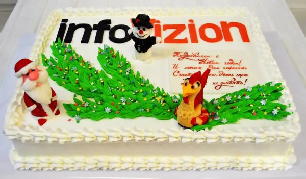
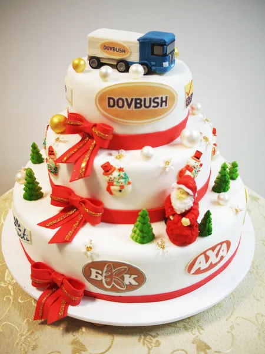
И еще один вариант, как слепить Деда Мороза, на видео:
Надписи и логотипы для новогоднего торта на корпоратив
На кондитерском изделии можно сделать надпись-поздравление «С Новым годом!» шоколадом. Для этого залейте растопленный шоколад в корнет и выдавите буквы по образцу на пергаментную бумагу, расположенную на трафарете. Чтобы надпись застыла, положите ее в морозильную камеру на несколько минут, а затем, приподняв ножом, поместите на покрытие из мастики.
Также на корпоративный тортик можно нанести логотип компании. Его либо вырезают из пласта мастики (как видно на фото новогоднего торта на корпоратив), либо печатают на сахарном листе. Существует еще вафельная бумага, на которую наносят рисунок, но многие предпочитают именно сахарную. Такой способ нанесения печати наиболее быстрый и сравнительно несложный.
Печать, работа с мастикой и хранение картинок
После печати рисунок должен высохнуть. Затем поместите его в полиэтиленовый канцелярский файл. Картинка из сахара не должна находиться на холоде, от этого она потрескается или разломится. То же самое случится из-за контакта с воздухом, если длительное время хранить ее в открытом виде. При соблюдении необходимых условий сахарную картинку удается сохранить до 3 месяцев.
Одновременно большое количество картинок не печатают. Хранят их только в горизонтальном и расправленном виде, чтобы они не замялись.
Полезно знать!
Сахарная картинка от тепла рук может подтаять и прилипнуть к файлу.
Логотип на торт на новогодний корпоратив укладывают, предварительно изолировав мастикой крем на коржах. Мастер, работая с фотопечатью, должен следить за тем, чтобы руки и все поверхности были абсолютно сухими. Капля воды, попавшая на сахарную бумагу, испортит рисунок: в том месте краска растечется.
Как нанести логотип на мастику
Раскатайте кусок мастики в цвет логотипа на доске или бумаге для выпечки. Место, где будет располагаться картинка, прорисуйте пищевыми фломастерами или прочертите зубочисткой. Снизу смажьте рисунок специальным кондитерским клеем или декор-гелем при помощи кисти. Некоторые мастера приклеивают логотип, промокнув тыльную сторону картинки влажной губкой.
Только затем приложите картинку и прогладьте ее. При приклеивании внимательно следите за тем, чтобы под изображением не образовались пузырьки. Если это случилось, легким движением ребра ладони прогладьте его по направлению к краям. Обрежьте лишнюю мастику по краям изображения.
Можно сразу уложить пласт с логотипом на торт без сушки, так как от длительного хранения у мастики могут подняться края.
Совет!
Чтобы скрыть стыки, покройте края рисунка после его укладки на изделие растопленным белым шоколадом.
Подробнее о работе со съедобной бумагой на видео:
Торт на новогодний корпоратив с конвертом
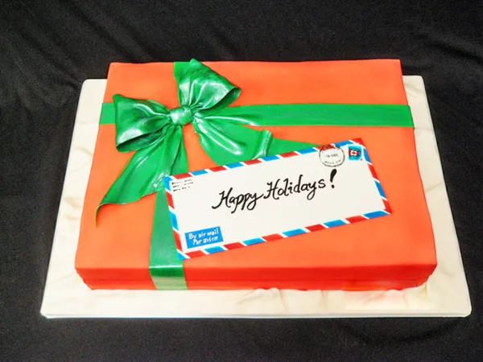
Оригинально на праздничном столе выглядят корпоративные торты на Новый год в виде коробки с подарком, украшенной пышным бантом и конвертом с надписью. Вам понадобится прямоугольный торт, покрытый оранжевой мастикой.
Создание банта
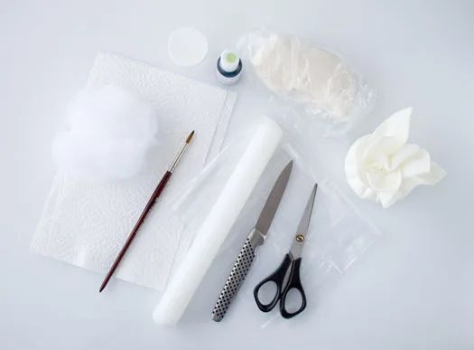
Возьмите:
- мастику зеленого цвета;
- скалку;
- нож;
- пищевой клей или воду;
- небольшую кисть;
- кусок синтепона (можно заменить ватой или свернутой тканью);
- плотную бумажную салфетку;
- пакет;
- крахмал;
- ножницы;
- линейку;
- блестящую цветочную пыльцу для мастики или зеленый кандурин.
Поэтапный процесс такой:
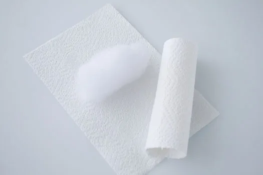
- Подготовьте валики для петель банта. Для этого синтепон или его заменители оберните сухой салфеткой. Размер валика должен соответствовать желаемому размеру банта. Сделайте таким же образом и второй валик.
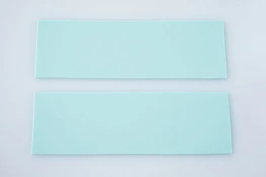
- Раскатайте кусок зеленой мастики максимально тонко. С помощью ножа и линейки вырежьте два длинных прямоугольника для петель банта.
Совет!
Если у вас есть машина для пасты, используйте ее для раскатки сахарной массы.
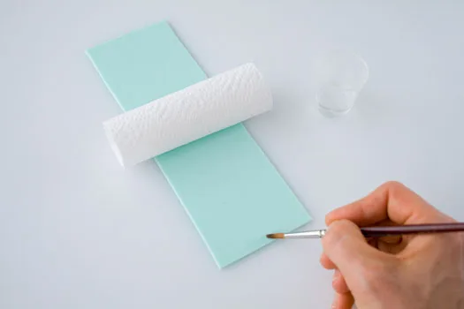
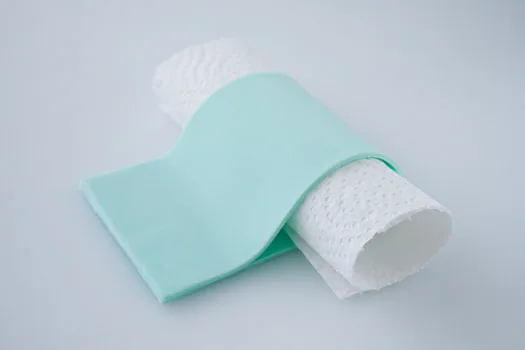
Возьмите один из этих прямоугольников, смажьте один его конец пищевым клеем. Посередине пласта положите валик. Соедините концы так, чтобы валик был внутри.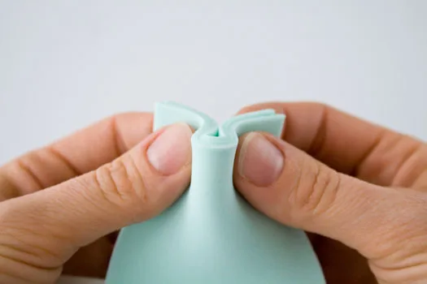
- Чтобы сделать складки, возьмите конец петли и, начиная с середины, сложите его волнами.
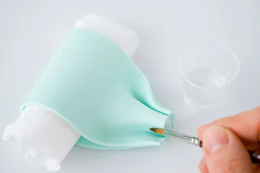
- Складки промажьте пищевым клеем, чтобы они держались. Таким же образом сделайте и вторую петлю.
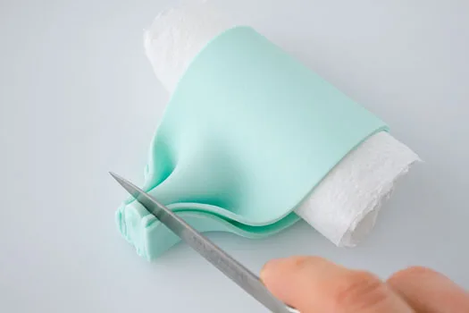
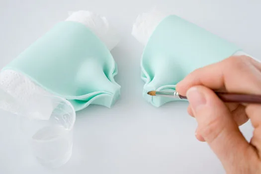
- Обрежьте концы петель и смажьте их клеем.
- Соедините их и дайте немного высохнуть перед тем, как продолжить.
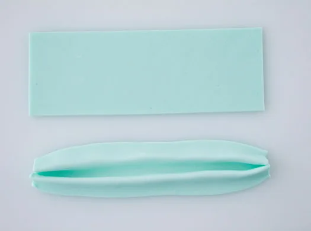
- Снова тонко раскатайте мастику такого же цвета и вырежьте еще один прямоугольник – он должен быть короче предыдущих. Это будет середина банта. Сложите его, чтобы образовались складки.
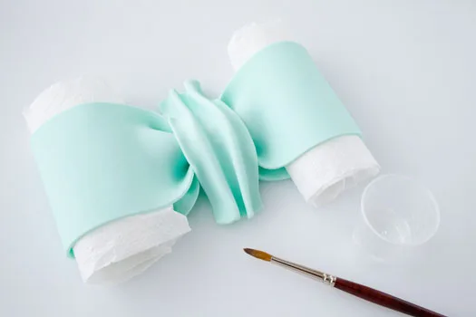
- Смажьте его тыльную часть пищевым клеем и оберните соединенные концы петель. При необходимости обрежьте ножом. Дайте банту полностью высохнуть. Когда он станет твердым, уберите валики. Поместите его на торт.
- Чтобы сделать ленты банта, вырежьте из мастики прямоугольники такого же размера, как и для петель. Обрежьте их нижние части по диагонали для красоты. Создайте складки и соедините с бантом, находящимся уже на торте, смазав клеем.
- С помощью кисточки покройте бант блестящей зеленой цветочной пыльцой или кандурином, разведя в небольшом количестве водки.
Или же можете посмотреть подробно процесс изготовления банта на видео:
Конверт
Для конверта подготовьте:
- мастику белого цвета;
- аэрограф или кисть;
- красители синего и красного цвета;
- пищевые фломастеры, растопленный белый шоколад для надписей;
- зубочистку;
- пищевую пленку;
- пищевой клей или воду.
Особенности приготовления:
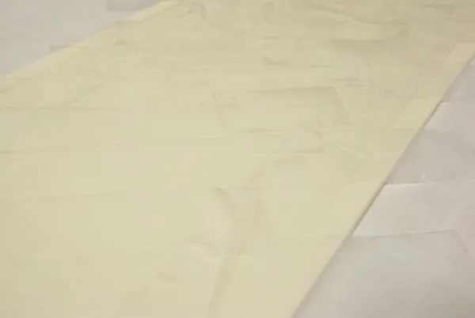
- Раскатайте кусок белой мастики и вырежьте из него прямоугольник. Дайте ему высохнуть при комнатной температуре в течение суток или положите в духовку на 3-10 минут при температуре не выше 80-85 С.
Это важно!
Такой метод не подходит для изделий из сахарной пасты на основе какао-масла. Внимательно следите за прямоугольником в процессе высушивания, чтобы он не деформировался. После достаньте его, положите на рабочую поверхность и прогладьте утюжком для мастики. Через 5 минут он полностью затвердеет, и с ним можно будет работать дальше.
- Отмеряйте сантиметр от краев конверта и прочертите слегка ножом по всему периметру линию на этом расстоянии от кромки. Накройте среднюю часть пласта пищевой пленкой, чтобы туда не попал краситель. Так как окантовка будет двух цветов, также закройте те участки, где будут находиться полоски другого цвета. При необходимости закрепите пищевую пленку скотчем.
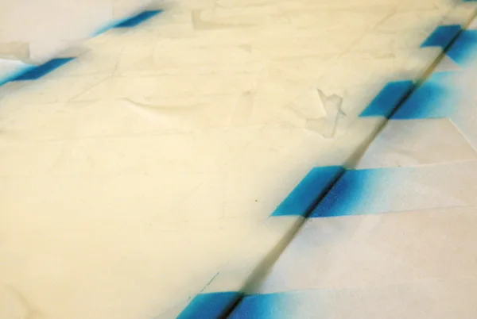
- Нанесите маркировку синего цвета при помощи аэрографа, пищевого маркера или кисточки и красителя.
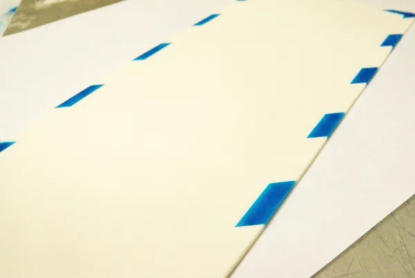
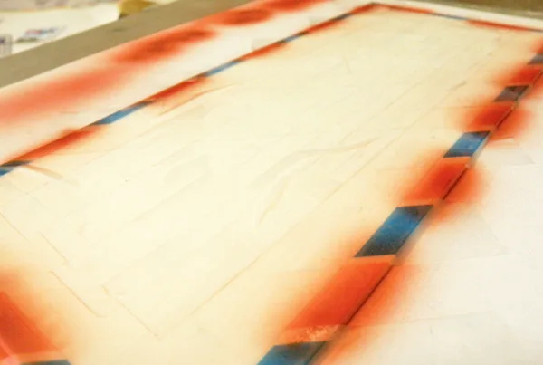
- Снимите участки пленки, закрывающие пустые места окантовки и заклейте вместо этого синюю маркировку, когда она высохнет. Помните, что между полосами разных цветов должны остаться незакрашенные участки. Центральная часть конверта должна по-прежнему быть скрытой под пленкой. Нанесите красные полосы.
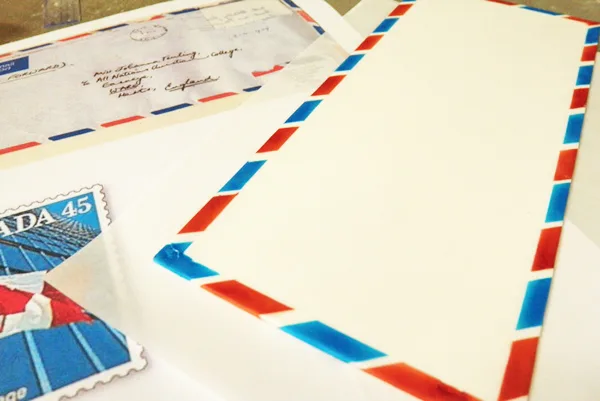
- Снимите защитное покрытие. Дайте краске подсохнуть.
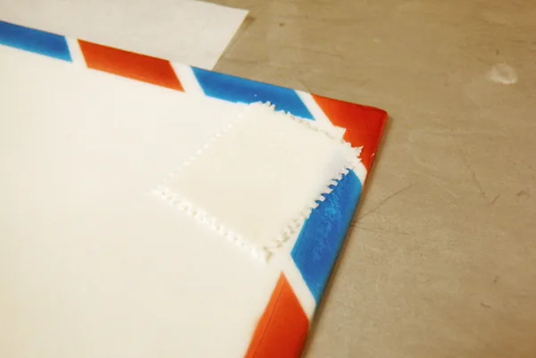
- Тем временем изготовьте марку. Вырежьте небольшой прямоугольник белого цвета. По его краям сделайте углубления, убирая лишнюю массу. Придавливайте зубочистку к краю марки и, не отжимая, тяните ее в сторону. При этом должны отрываться небольшие кусочки мастики.
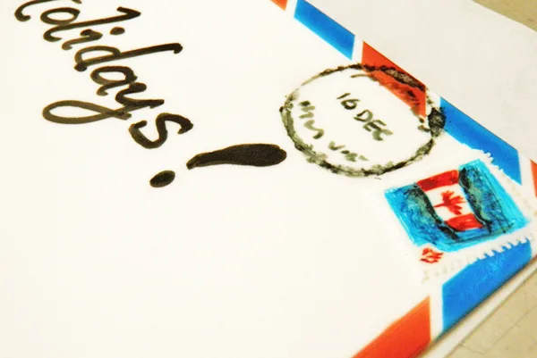
- Пищевым маркером нарисуйте на марке флаг или другие изображения. Рядом обозначьте печать, не нажимая сильно на фломастер. Растушуйте края пальцем.
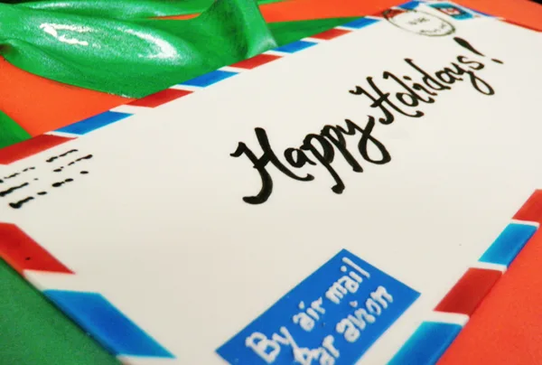
- Также сделайте неразборчивую надпись в верхнем левом углу конверта. В нижнем левом углу нарисуйте синий прямоугольник. Растопленным белым шоколадом с помощью корнета напишите на этом участке By air mail/Par avion. Посередине конверта жирным шрифтом пищевым маркером напишите поздравления с Новым годом.
- Уложите конверт на торт, смазав низ пищевым клеем.
Готово! С наступающими праздниками!